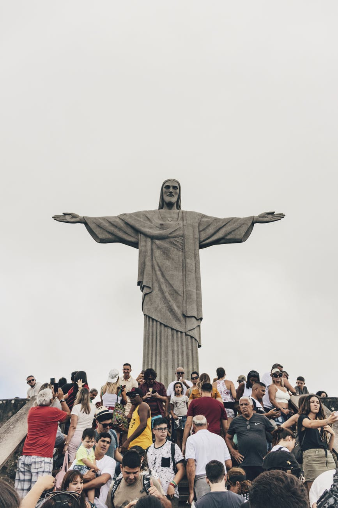

Christ the Redeemer is an Art Deco statue of Jesus Christ in Rio de Janeiro, Brazil, created by French sculptor Paul
Landowski and built by Brazilian engineer Heitor da Silva Costa, in collaboration with French engineer Albert Caquot.
Romanian sculptor Gheorghe Leonida fashioned the face. Constructed between 1922 and 1931, the statue is 30 metres (98 ft) high,
excluding its 8-metre (26 ft) pedestal. The arms stretch 28 metres (92 ft) wide. It is made of reinforced concrete and
soapstone.
The statue weighs 635 metric tons (625 long, 700 short tons), and is located at the peak of the 700-metre (2,300 ft)
Corcovado mountain in the Tijuca National Park overlooking the city of Rio de Janeiro. A symbol of Christianity around the world,
the statue has also become a cultural icon of both Rio de Janeiro and Brazil and was voted one of the New Seven Wonders of the World.
Vincentian priest Pedro Maria Boss first suggested placing a Christian monument on Mount Corcovado in the mid-1850s to honor
Princess Isabel, regent of Brazil and the daughter of Emperor Pedro II, but the project was not approved.
In 1889 the country became a republic, and owing to the separation of church and state the proposed statue was dismissed.
The Catholic Circle[clarification needed] of Rio made a second proposal for a landmark statue on the mountain in 1920.
The group organized an event called Semana do Monumento ("Monument Week") to attract donations and collect signatures to support
the building of the statue. The organization was motivated by what they perceived as "Godlessness" in the society. The donations
came mostly from Brazilian Catholics. The designs considered for the "Statue of the Christ" included a representation of the
Christian cross, a statue of Jesus with a globe in his hands, and a pedestal symbolizing the world.
The statue of Christ the Redeemer with open arms, a symbol of peace, was chosen.
Christ the Redeemer
